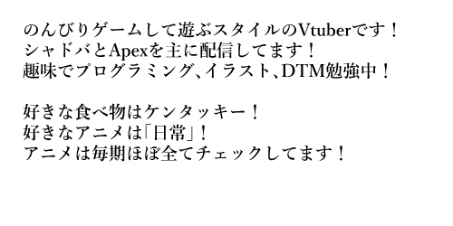
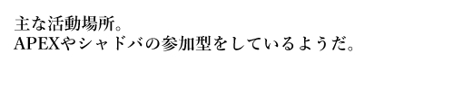
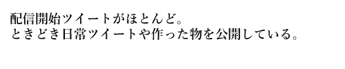
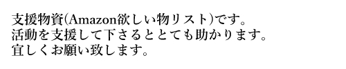
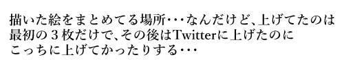
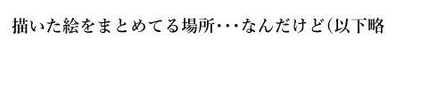

<!DOCTYPE html>
<html lang="ja">
<head>
    <meta charset="utf-8">
    <title>似科研究所</title>
    <BODY ONCONTEXTMENU="return false;"></BODY>
    <style type="text/css">
        h1{color:red;}
        h1{margin-left: 30.0px}
        h1{margin-top: 30.0px}
        
        p{color: green;}
        p{margin: 0.0px 0.0px 0.0px 0.0px; font: 18.0px 'Hiragino Sans'}
        p{margin-left: 50.0px} 

        a.YT{color: red;}
        a.YT{margin-left: 50.0px}

        a.Twitter{color: skyblue;}
        a.Twitter{margin-left: 50.0px}
        
        a.Sien{color: yellow;}
        a.Sien{margin-left: 50.0px}

        a.Pixiv{color: blue;}
        a.Pixiv{margin-left: 50.0px}

        a.Niko{color: green;}
        a.Niko{margin-left: 50.0px}
        
        /*　背景　*/
        body{
            background-image:url(img/frame4.png);
            background-size: contain;
            height:1000px;
            width: 1000px;
        }

        img{margin-left: 20.0px;}
        img.Header{margin-left: 0.0px;} 
        img.ProfileFace{margin-left: 50.0px; margin-top: 50.0px;} 
        img.ProfilTxt{margin-left: 50.0px; margin-top: 50.0px;} 
        img.Youtube_icon{margin-left: 50.0px; margin-top: 50.0px;} 
        img.Youtube_prof{margin-left: 20.0px; margin-top: 50.0px;} 
        img.Twitter_icon{margin-left: 50.0px; margin-top: 50.0px;} 
        img.Twitter_prof{margin-left: 20.0px; margin-top: 50.0px;} 
        img.Amazon_icon{margin-left: 50.0px; margin-top: 50.0px;} 
        img.Amazon_prof{margin-left: 20.0px; margin-top: 50.0px;} 
        img.Pixiv_icon{margin-left: 50.0px; margin-top: 50.0px;} 
        img.Pixiv_prof{margin-left: 20.0px; margin-top: 50.0px;} 
        img.Niko_icon{margin-left: 50.0px; margin-top: 50.0px;} 
        img.Niko_prof{margin-left: 20.0px; margin-top: 50.0px;} 

    </style>
</head>
<body>
  
    <!--
    コメント
    -->
    

    
    
    

    <h1>へいらっしゃい！</h1>
    <p>↓こいつは植木鉢くん</p>
    
    <br>

    <a href="https://www.youtube.com/channel/UCpbEs4_Hbk6Qz_FXw065z0Q">
        
        <br>
    </a>
    
    <a href="https://twitter.com/NisinaVtuber">
        
        <br>
    </a>

    <a href="https://www.amazon.co.jp/hz/wishlist/ls/148MTNZNEHY9F?ref_=wl_share">
        
        <br>
    </a>


    <a href="https://www.pixiv.net/users/79812997">
        
        <br>
    </a>


    <a href="https://seiga.nicovideo.jp/user/illust/126952092">
        
        <br>
    </a>


    <!--アクセスカウンター
    
    -->
    
    <!-- Google tag (gtag.js) グーグルアナリティクス-->
    <script async src="https://www.googletagmanager.com/gtag/js?id=G-SNR8S4J62J"></script>
    <script>
        window.dataLayer = window.dataLayer || [];
        function gtag(){dataLayer.push(arguments);}
        gtag('js', new Date());
        gtag('config', 'G-SNR8S4J62J');
    </script>
    
</body>
</html>